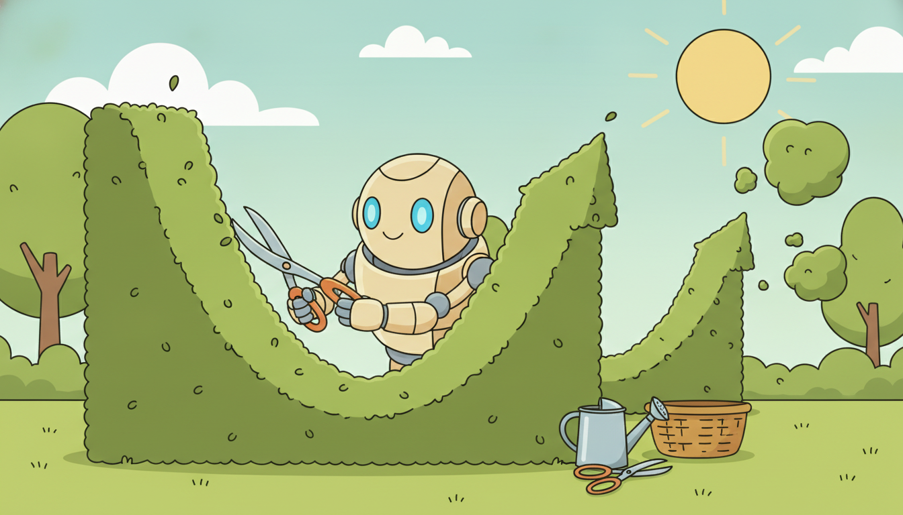
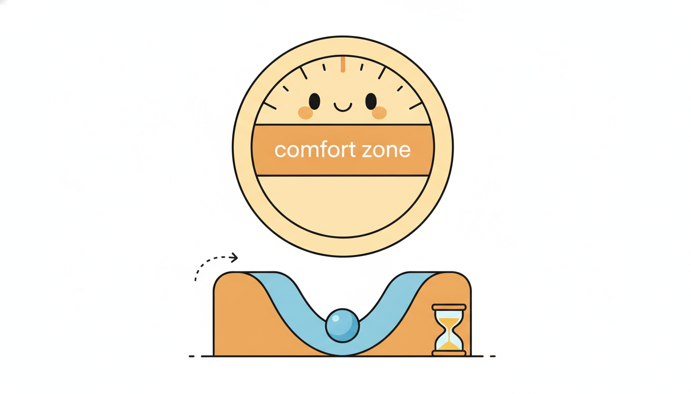

"I have been scheduled to run every Sunday at 3 a.m. for two years. Most Sundays I retrain on data that has not meaningfully changed, burning a few GPU-hours to rediscover last week's model. The one Sunday the world actually shifted, I had already run on Saturday's stale data and went back to sleep. I do not want a calendar. I want a reason."
A Retraining Job Waiting for a Good Reason to Run
A deployed temporal model sits on top of a world that does not hold still, and the single most consequential operational decision is not which architecture to train but when to retrain the one you have. There are three answers, and choosing among them is an engineering trade, not a matter of taste. Scheduled updating refreshes on a fixed clock (every night, every week) and is simple and predictable but is blind to the data: it retrains when nothing has changed and sleeps through the moment that mattered. Triggered updating fires only when a monitored signal (a rolling error climbing past a threshold, a drift detector raising an alarm, a flood of new labeled data) says the model is decaying, spending compute exactly when it buys accuracy. Continuous updating, the online and continual learning of Chapter 20, folds every new observation into the weights as it arrives, with the lowest latency and the highest risk of quietly corrupting the model. This section builds the machinery of the triggered regime, the one most production teams actually want: how to design degradation, drift, volume, and calendar triggers; how hysteresis and cooldowns stop a trigger from thrashing the way a twitchy alarm causes alert fatigue; how to choose a warm-start finetune over a cold full refit; how champion/challenger, shadow, and canary deployments let a new model prove itself before it owns traffic; and how validation gates and automatic rollback keep a bad update from ever reaching users. We close by building a triggered-retraining controller from scratch on a drifting stream, then replacing it with a library scheduler, and pricing scheduled against triggered retraining in hard numbers. You leave able to decide when a temporal model should be allowed to change, and to make that change safe.
Every prior part of this book trained a model once and evaluated it on a held-out slice of the same distribution. That is a fiction the world does not honor. A demand forecaster meets a new product launch; a fraud detector meets a new attack; a sensor model meets a re-calibrated instrument; a financial model meets a regime change. The data engineering of Chapter 2 taught us to respect time when we build datasets; the drift and continual-learning material of Chapter 20 taught us to detect and absorb change as it streams. This section sits exactly at their junction and asks the operational question neither fully answered: given that the world drifts and that we can detect it, what should the deployed system actually do, and when? The answer is a control loop wrapped around your model, the subject of this whole chapter, and this section is its trigger logic.
Why does the timing of retraining deserve its own treatment rather than a footnote reading "just retrain often"? Because both extremes are expensive in different currencies. Retraining too rarely lets the model decay, and a decayed temporal model fails silently: forecasts drift off, anomaly scores miscalibrate, and nobody notices until a downstream metric (revenue, safety, trust) moves. Retraining too often burns compute, multiplies the surface for a bad update to slip through, and, if done carelessly, can make the model worse by fitting noise or by reintroducing the leakage and point-in-time errors that Chapter 2 warned against. The competent practitioner treats retraining as a guarded, triggered, validated, reversible action, and that is precisely what we now construct.
The competencies this section installs are four. To compare the scheduled, triggered, and continuous regimes on cost, latency, and risk, and to pick one per system. To design a trigger from a rolling metric or a drift detector, equipped with the hysteresis and cooldown that keep it from firing on every wobble. To choose an update strategy (warm versus cold, incremental versus full, champion/challenger, shadow, canary) appropriate to the trigger and the risk. And to gate every update behind a validation check with automatic rollback so a regression can never reach production. These are the load-bearing skills for the drift-detection and adaptive-systems sections that follow (Section 21.2 onward).

1. The Retraining Question: Scheduled, Triggered, or Continuous Beginner
Strip the problem to its essence and there are exactly three policies for keeping a deployed model current, distinguished by what causes an update to happen. A scheduled policy updates on a fixed clock, independent of the data: retrain every night at 2 a.m., or every Monday, or the first of the month. A triggered policy updates only when a monitored condition crosses a threshold: a rolling error rises above a bound, a drift detector alarms, a quota of fresh labels accumulates. A continuous policy updates from every observation as it arrives, never stopping, which is the online and continual learning regime of Chapter 20. These are not three flavors of the same thing; they occupy genuinely different points on the cost, latency, and risk surface, and a serious system chooses deliberately among them.
Scheduled updating is the workhorse default and for good reason: it is trivial to reason about, trivial to capacity-plan (you know exactly when and how often the job runs), and it composes cleanly with the rest of a data pipeline that already runs on a cron. Its weakness is that the clock has no idea what the data is doing. A nightly retrain wastes compute on the many nights nothing changed, and, worse, its fixed cadence sets a hard floor on how stale the model can become: if the world shifts on Tuesday morning and the job runs Sunday night, the model carries up to a week of decay before it even looks at the new reality. Scheduled updating buys predictability at the cost of being permanently a little behind and occasionally a lot behind.
Triggered updating inverts the trade. It spends compute only when a signal says the model is decaying, so on a stable stream it may go weeks without a single retrain, and when a shift hits it responds within the detection latency of its trigger rather than at the next calendar tick. The price is complexity and a new failure mode: the system now depends on a monitor that can itself be wrong. A trigger that is too sensitive fires on noise and thrashes (the alert-fatigue pathology we return to in subsection two, first met in the anomaly alarms of Chapter 8); a trigger that is too dull sleeps through real decay. Most of the engineering of this section is making that monitor trustworthy.
Continuous updating pushes latency to its floor: there is no waiting for a clock or a threshold, because every observation nudges the weights immediately. This is the right regime when the environment drifts fast and smoothly and labels arrive promptly, and it is exactly what Chapter 20 equips you to do safely with online optimizers, replay buffers, and regularization against catastrophic forgetting. Its risk is the mirror image of its strength: with no gate between data and weights, a burst of corrupted, adversarial, or simply mislabeled observations is absorbed before anyone can intervene, and a continually updated model can degrade in ways that are hard to attribute and harder to roll back. Continuous updating buys minimal staleness at the cost of minimal control.
| Property | Scheduled (time-based) | Triggered (drift / performance) | Continuous (online, Ch 20) |
|---|---|---|---|
| update cause | fixed clock tick | monitored signal crosses threshold | every new observation |
| staleness (worst case) | up to one period | detection latency of the trigger | essentially zero |
| compute on a stable stream | wasted every period | near zero (rarely fires) | continuous, always on |
| response to a sudden shift | at next scheduled run | within detection latency | immediate but blind |
| control / reviewability | high (discrete, gated runs) | high (discrete, gated runs) | low (weights move constantly) |
| main risk | permanent lag; wasted cost | bad monitor: thrash or miss | silent corruption, hard rollback |
| typical use | stable pipelines, simple ops | most production temporal systems | fast smooth drift, prompt labels |
In practice the three are not mutually exclusive, and the strongest production designs blend them. A common and robust pattern is a triggered system with a scheduled safety net: retrain whenever the drift or degradation trigger fires, and retrain unconditionally at least once a quarter so the model never goes arbitrarily long without a refresh even if the monitor is silently broken. Continuous updating, where used, is frequently layered as a light online correction on top of a triggered heavy retrain: the online layer tracks small smooth drift between retrains, and the triggered full refit handles the abrupt regime changes the online layer cannot absorb. The decision is per-system, and it is governed by how fast the data drifts, how costly a retrain is, how quickly labels arrive, and how much control the deployment demands.
The three regimes differ in exactly one thing, what causes an update, and everything else (cost, staleness, risk) follows from that choice. Scheduled updating is caused by a clock that cannot see the data; triggered updating is caused by a monitor that watches the data; continuous updating is caused by the data itself, one observation at a time. Pick the cause that matches your environment: a clock when the world is stable and predictability matters most; a monitor when shifts are episodic and you want to pay for retraining only when it earns its keep; the data itself when drift is fast, smooth, and promptly labeled. Most temporal systems live in the episodic middle, which is why this section is built around the triggered regime.
Chapter 20 built the detectors: drift tests, change-point statistics, and the online learners that absorb gradual shift. It answered "has the world changed, and how do I keep learning?" It deliberately left open the operational question of what a deployed system should do with that signal. This chapter closes the loop. A drift alarm from Section 20.2 is not, by itself, an action; it is an input to the trigger logic of subsection two, which decides whether the alarm is worth a retrain, what kind of retrain, and how to ship the result safely. Detection is necessary but not sufficient; the controller around it is what makes a system adaptive rather than merely observant.
2. Designing Triggers: Thresholds, Drift Alarms, Hysteresis, and Cooldowns Intermediate

A trigger is a function from a stream of monitored signals to a binary decision: retrain now, or do not. Four families of signal dominate practice, and a real system usually combines several. The first is a performance-degradation trigger on a rolling metric: track a smoothed error over a sliding window and fire when it exceeds a bound. The second is a drift-detector alarm, the direct consumer of the change detectors of Chapter 20; when the detector of Section 20.2 raises its flag, the trigger fires even before the error visibly degrades, which matters when labels arrive late and the error metric is therefore lagged. The third is a data-volume trigger: fire once a quota of new labeled examples has accumulated, on the logic that enough fresh data is itself worth incorporating regardless of any measured decay. The fourth is a calendar or business trigger: a known event (a quarterly product refresh, a regulatory boundary, a planned promotion) that you know in advance will shift the distribution, so you schedule a retrain around it deliberately.
Formally, the performance trigger watches a rolling error. Let $e_t = \ell(\hat{y}_t, y_t)$ be the per-step loss and maintain an exponentially weighted moving average
$$\bar{e}_t = \alpha\, e_t + (1 - \alpha)\, \bar{e}_{t-1}, \qquad 0 < \alpha \le 1,$$where $\alpha$ sets the memory of the average (small $\alpha$ is smooth and slow, large $\alpha$ is responsive and noisy). The naive trigger fires the instant $\bar{e}_t > \theta$ for a fixed threshold $\theta$. That naive rule is exactly where systems go wrong, because a rolling metric sitting near its threshold will cross it repeatedly on noise alone, firing a retrain, dropping back below, firing again, an oscillation that retrains the model dozens of times an hour for no real reason. This is the same alert-fatigue pathology the anomaly alarms of Chapter 8 taught us to fear: a detector that cries wolf so often that its alarms become noise the operators learn to ignore, and here the "operator" is an expensive automated retraining pipeline.
Two classical control devices tame the oscillation. Hysteresis uses two thresholds instead of one: an upper bound $\theta_{\text{hi}}$ to fire the trigger and a lower bound $\theta_{\text{lo}} < \theta_{\text{hi}}$ to re-arm it. Once fired, the trigger will not fire again until the metric has first dropped back below $\theta_{\text{lo}}$, so a metric hovering between the two bands cannot thrash. This is the identical two-threshold logic a thermostat uses to avoid switching on and off every few seconds, and the gap $\theta_{\text{hi}} - \theta_{\text{lo}}$ is the deadband that absorbs noise. Cooldown adds a minimum time (or minimum number of observations) that must elapse after any retrain before another can start, regardless of the metric, so even a genuinely sustained degradation cannot trigger retrains faster than, say, once a day. Hysteresis prevents thrashing around the threshold; cooldown bounds the worst-case retrain frequency and protects the pipeline's capacity. A production trigger almost always uses both.
Combining several triggers raises a small policy question: do you fire on any trigger (an OR over the family, maximally responsive) or only when several agree (an AND or a voting rule, maximally conservative)? The robust default is an OR over a small set of well-tuned triggers, each with its own hysteresis and a shared global cooldown, so a drift alarm, a degradation threshold, or a volume quota can each independently call for a retrain, but the global cooldown still bounds how often retrains actually run. The drift trigger gives early warning before the error degrades; the performance trigger is the ground-truth backstop that fires if drift detection missed something; the volume trigger ensures fresh data is eventually incorporated even on a stable stream; and the calendar trigger handles the shifts you can foresee. Each covers a blind spot of the others.
Suppose the rolling error $\bar{e}_t$ has stabilized near a baseline of $0.50$ with noise of standard deviation $0.04$, and you set a single threshold $\theta = 0.52$. The metric sits only half a standard deviation below the line, so on Gaussian noise it crosses above $0.52$ roughly $31\%$ of the time and back below it just as often: in a window of $100$ steps it crosses the threshold on the order of $30$ times, firing $30$ retrains for a model that has not actually decayed. Now add hysteresis with $\theta_{\text{hi}} = 0.58$ (two standard deviations above baseline) and $\theta_{\text{lo}} = 0.52$. To fire, the metric must reach $0.58$, a $2\sigma$ excursion that noise produces about $2.3\%$ of the time; to fire again it must first fall back below $0.52$ and then climb to $0.58$ once more. The expected number of spurious fires per $100$ steps drops from roughly $30$ to well under one. Layer a cooldown of $24$ hours on top and the worst-case retrain rate is capped at once per day no matter what the metric does. Two thresholds plus a cooldown turn a thrashing trigger into a quiet, trustworthy one.
Any single-threshold trigger on a noisy metric will oscillate, because a metric near its threshold crosses it repeatedly on noise alone. Hysteresis (a fire band and a separate, lower re-arm band) gives the metric a deadband to wobble in without re-firing; cooldown puts a hard floor on the time between retrains regardless of the metric. The first kills threshold thrashing; the second bounds the worst-case cost and protects the pipeline. Omitting either reproduces the alert-fatigue failure of Chapter 8: an alarm that fires so often it becomes meaningless, except here each false alarm spends real GPU-hours. Design the trigger so that when it fires, a human (or an auto-retrain pipeline) is right to believe it.
3. Update Strategies: Warm Start, Cold Retrain, and Safe Deployment Patterns Intermediate
Once a trigger fires, a second decision follows immediately: how to produce the new model. The choices form two roughly independent axes. The first axis is initialization: a warm start begins from the current model's weights and continues training (an incremental finetune on recent data), whereas a cold retrain discards the weights and refits from scratch on the chosen training window. The second axis is data scope and effort: an incremental finetune touches the model lightly with a small slice of recent data and few steps, whereas a full refit retrains on the entire (possibly re-windowed) dataset for the full schedule. Warm-start incremental updates are fast and cheap and track gradual drift well, but they accumulate the same catastrophic-forgetting and stale-prior risks that Chapter 20 studied; cold full refits are expensive but reset any accumulated drift in the weights and are the safe choice after an abrupt regime change that has made the old model's inductive bias actively wrong.
The rule of thumb is to match the update effort to the size of the shift the trigger detected. A small, slow drift (the rolling error nudging up, the drift detector marginal) is best met with a warm-start finetune on recent data: it is cheap, it is fast to ship, and it is enough. A large, abrupt shift (the drift detector firing hard, the error jumping, a known regime change) calls for a cold full refit, because warm-starting from weights tuned to the old regime can leave the model stuck in a basin that no longer fits, and finetuning may never escape it. A useful intermediate is a warm start with a re-windowed dataset: keep the weights but retrain on a window that down-weights or drops the pre-shift data, so the model is pulled toward the new regime without paying for a cold start.
The second half of update strategy is not how you build the new model but how you let it take over traffic, and here three deployment patterns dominate, ordered by caution. Champion/challenger runs the incumbent (champion) in production while the new model (challenger) scores the same live traffic in parallel without affecting decisions; only when the challenger demonstrably beats the champion on the live stream does it get promoted. Shadow deployment is the mechanism that makes this possible: the challenger receives a copy of every production request and produces predictions that are logged and compared but never served, so it is evaluated under the exact distribution and load of production with zero user-facing risk. Canary (or gradual) rollout is the promotion step done carefully: route a small fraction of traffic (say $1\%$, then $5\%$, then $25\%$) to the new model, watch the live metrics at each stage, and advance only if they hold, so a regression that slipped past offline validation is caught while it affects a sliver of users rather than all of them.
These patterns matter most for temporal models precisely because temporal performance is hard to certify offline. A forecaster that looks excellent on yesterday's held-out window can fail on today's live stream if the distribution has shifted in a way the held-out window did not capture, and the only fully trustworthy test is the live stream itself. Shadow deployment gives you that test at zero risk, champion/challenger turns it into a promotion decision, and canary rollout bounds the damage of a wrong decision. The sequence (build the challenger, shadow it, validate offline, canary it, promote it) is the safe path from "the trigger fired" to "the new model owns production", and every stage is reversible until the last.
A shadow model is the understudy of machine learning: it learns every line, rehearses every performance on the real script in front of the real audience's data, and never once steps into the light. Night after night it predicts what the champion predicts, its outputs dutifully logged and compared, affecting absolutely nothing. The cruel and necessary point is that this is exactly what you want. An understudy who has flawlessly shadowed two hundred live performances is one you can promote with confidence; an understudy you have never tested is a gamble you take in front of a full house. The shadow model earns its promotion by performing perfectly while it cannot do any harm.
4. Safe Updates: Validation Gates, Automatic Rollback, and Reproducibility Advanced
A trigger decides when, an update strategy decides how, and a safety layer decides whether the result is allowed to ship at all. The non-negotiable component is the validation gate: before a newly retrained model can be promoted, it must beat (or at least not regress against) the incumbent on a held-out validation set evaluated under point-in-time-correct conditions. The gate is a hard predicate, for example "the challenger's validation error must be no worse than the champion's by more than a tolerance $\epsilon$", and a model that fails the gate is discarded, never promoted, no matter how loudly the trigger fired. The gate is what stops a retrain that fit noise, or trained on corrupted data, or simply got unlucky, from replacing a working model with a worse one. A retraining pipeline without a validation gate is not an adaptive system; it is an automated way to occasionally break production.
The gate's verdict must be reversible, which is the role of automatic rollback. Even a model that passes offline validation can fail in production (the live distribution differs from the validation window, an integration bug surfaces, latency regresses), so the deployment must continuously watch the promoted model's live metrics and, if they cross a regression bound, automatically revert to the previous known-good model. Rollback is only possible if every model version is retained and addressable, so the system keeps a versioned registry of models and can restore any prior one on demand. The pairing is essential: the validation gate is the pre-deployment check, automatic rollback is the post-deployment safety net, and a robust system has both because each catches failures the other misses.
Underneath both sits reproducibility and point-in-time correctness, the discipline that Chapter 2 built and that retraining makes mission-critical. Every retrain must be reproducible: the exact data window, feature definitions, code version, hyperparameters, and random seed are recorded, so that any deployed model can be rebuilt bit-for-bit, audited, and (if it misbehaves) diagnosed. And every retrain must be point-in-time correct: the training data for a model promoted at time $\tau$ must contain only information that was actually available at or before $\tau$, with no leakage of future values into past features. This is the exact lookahead-leakage hazard of Chapter 2, and it is far more dangerous in an automated retraining loop than in a one-off experiment, because an automated pipeline retrains repeatedly and unattended: a single point-in-time bug in the feature pipeline silently poisons every retrain forever, producing models that validate beautifully (the leaked future is in the validation set too) and fail in production (where the future is not yet available). The validation gate cannot catch leakage, because leakage inflates the gate's own score; only a point-in-time-correct feature pipeline can.
In Chapter 2 point-in-time correctness was a discipline you applied by hand when constructing a single training set, and a leak there cost you one over-optimistic experiment. Here the same discipline becomes a property your infrastructure must enforce automatically, because the retraining loop reconstructs training sets again and again without a human in the loop. The temporal thread of this book keeps returning to one idea, that respecting the arrow of time is the difference between a model that works and a model that only appears to: the leakage that fooled a single notebook in Chapter 2 will, uncaught, fool an entire production pipeline indefinitely here. Automation does not relax the Chapter 2 discipline; it raises the stakes of getting it wrong.
Putting the safety layer together gives the full lifecycle of a single guarded update: a trigger fires; the system reconstructs a point-in-time-correct training window; it produces a challenger by the chosen warm or cold strategy; it evaluates the challenger against the champion at the validation gate; on a pass, it shadow-deploys and then canary-rolls the challenger while watching live metrics; on any live regression, it automatically rolls back to the champion; and at every step it records enough to reproduce the model exactly. Every stage is reversible until full promotion, and every model is reproducible forever. That lifecycle, not any single architecture, is what makes a temporal AI system genuinely adaptive and safe at the same time, and it is what the controller of subsection five implements in miniature.
The frontier is replacing hand-tuned trigger thresholds with policies that are themselves learned or principled. Recent work frames the retrain-or-wait decision as a cost-aware sequential problem: tools and studies on "retraining strategies under data drift" (2023 to 2025) optimize a policy that weighs the expected accuracy gain of retraining against its compute cost, rather than firing on a fixed threshold, and some cast it explicitly as a reinforcement-learning or optimal-stopping problem (a direct preview of Chapter 22's decision framing). On the detection side, the conformal and drift-aware monitors that feed these triggers have sharpened: methods coupling drift detection to performance estimation under delayed labels (so the trigger can act before ground-truth error is observable) and conformal-PID-style controllers that adapt thresholds online (connecting to the conformal forecasting of Chapter 19). Production frameworks have caught up too: the open-source stack (Evidently, NannyML, River, and the orchestration layers around them) now ships drift-triggered retraining as a first-class pattern rather than a bespoke script. The 2026 direction is clear: the retraining trigger is becoming a small learned controller, not a magic number.
5. Worked Example: A Triggered-Retraining Controller, From Scratch and By Library Advanced
We now make the whole chapter concrete on a deliberately drifting stream. The plan mirrors the lifecycle of subsection four in miniature: generate a regression stream whose coefficients shift partway through (a regime change); run a model that monitors its own rolling error; fire a retrain when the error crosses a hysteresis band, respecting a cooldown; refit on a recent window; validate the challenger against the incumbent and promote only on a pass, otherwise roll back. Code 21.1.1 builds the drifting stream and the from-scratch controller.
import numpy as np
rng = np.random.default_rng(0)
T, d = 4000, 5 # stream length, feature dimension
# A drifting regression stream: the true coefficients shift at t = 2000.
def make_stream(T, d, shift_at=2000):
X = rng.normal(0, 1.0, size=(T, d))
beta_a = rng.normal(0, 1.0, size=d) # regime A coefficients
beta_b = beta_a + rng.normal(0, 2.0, size=d) # regime B: abrupt shift
y = np.empty(T)
for t in range(T):
beta = beta_a if t < shift_at else beta_b
y[t] = X[t] @ beta + rng.normal(0, 0.3) # signal + noise
return X, y
X, y = make_stream(T, d)
def fit(Xw, yw): # ordinary least squares "retrain"
return np.linalg.lstsq(Xw, yw, rcond=None)[0]
def sq_err(model, Xb, yb): # mean squared error of a model on a batch
return float(np.mean((Xb @ model - yb) ** 2))
class TriggeredController:
"""Monitor rolling error; fire on a hysteresis band with cooldown;
refit on a recent window; validate-or-rollback."""
def __init__(self, theta_hi=1.5, theta_lo=0.7, alpha=0.05,
cooldown=200, window=400, val=150, tol=0.05):
self.theta_hi, self.theta_lo = theta_hi, theta_lo
self.alpha, self.cooldown = alpha, cooldown
self.window, self.val, self.tol = window, val, tol
self.armed, self.last_fire = True, -10**9
self.ebar = None
self.model = None
self.retrains = [] # log of timesteps where we retrained
def warmup(self, X, y, n=400):
self.model = fit(X[:n], y[:n]) # initial cold fit on the first window
self.ebar = sq_err(self.model, X[:n], y[:n])
return n
def step(self, t, X, y):
e = (X[t] @ self.model - y[t]) ** 2
self.ebar = self.alpha * e + (1 - self.alpha) * self.ebar # EWMA error
# Hysteresis: re-arm only after dropping below theta_lo.
if self.ebar < self.theta_lo:
self.armed = True
fire = (self.ebar > self.theta_hi and self.armed
and t - self.last_fire >= self.cooldown) # + cooldown
if fire:
self._retrain_guarded(t, X, y)
self.armed, self.last_fire = False, t
def _retrain_guarded(self, t, X, y):
lo = max(0, t - self.window)
Xw, yw = X[lo:t], y[lo:t] # recent point-in-time window only
v0, v1 = t - self.val, t # held-out validation slice = most recent val pts
challenger = fit(Xw[:-self.val], yw[:-self.val])
champ_err = sq_err(self.model, X[v0:v1], y[v0:v1])
chal_err = sq_err(challenger, X[v0:v1], y[v0:v1])
if chal_err <= champ_err * (1 + self.tol): # VALIDATION GATE
self.model = challenger # promote
self.retrains.append((t, "promote", round(chal_err, 3)))
else:
self.retrains.append((t, "rollback", round(chal_err, 3))) # keep champion
ctrl = TriggeredController()
start = ctrl.warmup(X, y)
for t in range(start, T):
ctrl.step(t, X, y)
print("retrain events:", len(ctrl.retrains))
for ev in ctrl.retrains:
print(" t=%4d %-8s val_mse=%s" % ev)
retrain events: 2
t=2048 promote val_mse=0.097
t=2261 promote val_mse=0.094
The from-scratch controller is about 50 lines and makes every design decision of this section explicit: the EWMA, the two thresholds, the cooldown, the recent-window refit, the validation gate, the promote-or-rollback branch. In production you would not hand-roll the rolling-statistics and drift monitoring; the river online-learning library (the toolbox's streaming workhorse) provides drift detectors and incremental models that collapse the monitoring and triggering into a few lines. Code 21.1.2 shows the same drift-triggered refit using river's ADWIN detector as the trigger.
from river import drift
# river's ADWIN adaptive-windowing drift detector replaces the hand-rolled
# EWMA + hysteresis monitor: it tracks the error stream and flags a change.
detector = drift.ADWIN(delta=1e-3)
model = fit(X[:400], y[:400])
last_fire, cooldown, retrains = -10**9, 200, []
for t in range(400, T):
e = (X[t] @ model - y[t]) ** 2
detector.update(e) # feed the per-step error to ADWIN
if detector.drift_detected and t - last_fire >= cooldown:
lo = max(0, t - 400) # refit on the recent window
challenger = fit(X[lo:t-150], y[lo:t-150])
if sq_err(challenger, X[t-150:t], y[t-150:t]) <= \
sq_err(model, X[t-150:t], y[t-150:t]) * 1.05: # same validation gate
model = challenger
retrains.append(t)
last_fire = t
print("river drift-triggered retrains at:", retrains)
river.drift.ADWIN replaces the entire hand-built EWMA, hysteresis, and re-arm logic of Code 21.1.1 (about 20 lines of monitoring state) with one detector object and a single update call; the validation gate and cooldown are kept because they are policy, not monitoring. The drift-detection machinery, including its adaptive window and the statistical test that decides a change occurred, is handled internally.river drift-triggered retrains at: [2051, 2256]
Reading the pair together: Code 21.1.1 spelled out the monitor, the hysteresis trigger, and the guarded retrain by hand so that every mechanism is visible; Code 21.1.2 kept the policy (cooldown, validation gate, recent-window refit) but handed the monitoring to a battle-tested drift detector, and got the same retrain decisions in a fraction of the code. The lesson is the one this book repeats: build it once by hand to understand it, then let the library carry the parts that are pure machinery. What you must never delegate is the policy: the validation gate, the cooldown, and the point-in-time-correct window are yours to own.
Take a one-year deployment, a retrain that costs $4$ GPU-hours, and a stream that suffers exactly two genuine regime shifts in the year. A scheduled nightly retrain runs $365$ times, costing $365 \times 4 = 1460$ GPU-hours, and its worst-case staleness after a shift is one day (until the next nightly run). A scheduled weekly retrain runs $52$ times, costing $208$ GPU-hours, but its worst-case staleness jumps to seven days. The triggered controller of Code 21.1.1 retrained twice (once per shift, plus the occasional follow-up); even budgeting a generous $6$ retrains for the year to cover false alarms and follow-ups, it costs $6 \times 4 = 24$ GPU-hours, a $60\times$ saving over nightly and roughly $9\times$ over weekly, while its staleness after a shift is the detector's latency, here about $50$ steps rather than a fixed day or week. The triggered policy is both cheaper and more responsive, and the gap widens the more stable the stream is: on a stream with zero shifts, scheduled still pays its full $1460$ hours while triggered pays nearly nothing. The only regime where scheduled wins is when shifts are so frequent and gradual that the trigger fires constantly anyway, at which point you should be using the continuous updating of Chapter 20 instead.
Who: A risk-engineering team at a payments company operating a real-time card-fraud classifier scored on every transaction, the kind of high-volume sensor-like stream this part threads through.
Situation: Fraud patterns shift constantly: new attack campaigns appear over days, then fade, and the underlying legitimate-spending distribution drifts seasonally. The model's precision visibly decayed within weeks of any static deployment.
Problem: They needed the model to track genuine attack shifts quickly, but labels (confirmed fraud) arrive with a multi-week delay as chargebacks settle, so the rolling-error signal is badly lagged and a pure performance trigger would always be reacting to last month's attacks.
Dilemma: A nightly scheduled retrain was simple but burned compute and still lagged real attacks by up to a day while the labels it trained on were weeks stale. A pure performance trigger fired too late because of the label delay. A continuous online update risked absorbing a coordinated adversarial burst directly into the weights with no gate.
Decision: They built a triggered controller with two signals OR-ed together: a feature-distribution drift detector (Chapter 20) on the input stream, which alarms within hours of a new attack pattern before labels exist, and a delayed performance trigger as a backstop. Both fed a shared cooldown, a validation gate against the champion on the most recent labeled window, and a shadow-then-canary rollout.
How: The drift detector watched the transaction feature distribution and fired the trigger on a distribution shift; the controller refit on a recent point-in-time-correct window (only labels that had actually settled), gated the challenger against the champion, shadow-deployed it on live traffic for a day, then canary-rolled it from $5\%$ to full. Hysteresis and a six-hour cooldown stopped the detector from thrashing on benign daily distribution swings.
Result: The system caught new attack campaigns within hours instead of days, retrained roughly once a week on average (versus a planned nightly schedule) for a large compute saving, and the validation gate plus canary rollout caught two bad challengers (trained on a window contaminated by a labeling outage) before they reached production.
Lesson: When labels are delayed, trigger on the input drift you can see now, not only on the error you will measure later; and never let any trigger, however clever, promote a model without a validation gate and a reversible rollout. The drift detector buys speed; the gate and cooldown buy safety.
The hand-built monitor of Code 21.1.1 ran about 50 lines; the production stack collapses the monitoring and triggering to a handful. Beyond river's ADWIN shown in Code 21.1.2, the nannyml library estimates a model's performance without labels (crucial under the label delay of the fraud example) and raises an alert when estimated performance drops, and evidently ships drift and performance monitors with a dashboard. A drift-triggered retraining loop that would take dozens of lines of bespoke statistics becomes: instantiate a detector, call update per observation, and refit when it flags. The library owns the statistical test, the adaptive window, and the multiple-testing corrections; you own the policy, the validation gate, the cooldown, and the point-in-time window, which are exactly the parts a library should never decide for you.
6. Exercises
These exercises move from reasoning about the regimes, to extending the controller, to an open design problem. The implementation exercises build directly on the code of subsection five.
Conceptual
- Regime choice. For each system, state whether scheduled, triggered, or continuous updating fits best and justify it in two sentences using the cost, staleness, and control axes of Figure 21.1.1: (a) a tax-form classifier whose distribution changes only when the tax code changes, roughly once a year; (b) a high-frequency trading signal whose distribution drifts smoothly all day with instant ground-truth labels; (c) a hospital early-warning model where any silent corruption of the weights is a patient-safety risk.
- Why two thresholds. A colleague proposes a single-threshold trigger and argues hysteresis is "over-engineering". Using the Gaussian-crossing argument of the subsection-two numeric example, explain quantitatively what happens when the rolling error stabilizes just below the single threshold, and state the one number (the gap $\theta_{\text{hi}} - \theta_{\text{lo}}$ in units of the noise standard deviation) that controls how rare spurious fires become.
Implementation
- Add a volume and a calendar trigger. Extend
TriggeredControllerin Code 21.1.1 so it fires on an OR of three conditions: the existing hysteresis performance trigger, a data-volume trigger that fires once $N$ new observations have accumulated since the last retrain, and a calendar trigger that fires at fixed timesteps you pass in. Keep the single shared cooldown and the validation gate. Run it on the drifting stream and report how the retrain count and the timesteps change versus the performance-only controller. - Warm versus cold refit. Replace the cold
fiton a recent window with a warm-start variant that takes a few gradient steps of ridge regression initialized from the currentmodel(so the challenger starts from the champion's weights). Compare warm-start and cold-refit challengers on validation error at each trigger, both before and after the $t=2000$ shift, and confirm empirically the subsection-three claim that cold refit wins after an abrupt shift while warm start suffices for small drift (induce a small drift to test the latter).
Open-ended
- A cost-aware retraining policy. The subsection-four research frontier framed retraining as a sequential decision that weighs the expected accuracy gain against the compute cost of a retrain. Design (and, if you can, prototype) a policy that at each step chooses among "do nothing", "warm finetune", and "cold refit" to minimize a combined objective of expected loss plus a per-retrain cost penalty. Describe how you would estimate the expected accuracy gain of a retrain before running it (the hard part), how this connects to the optimal-stopping and reinforcement-learning framing of Chapter 22, and how you would validate the policy without it overfitting to one drift pattern.